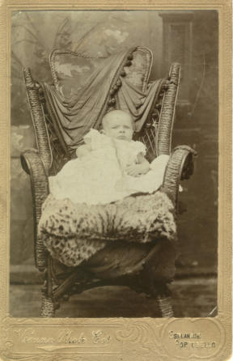
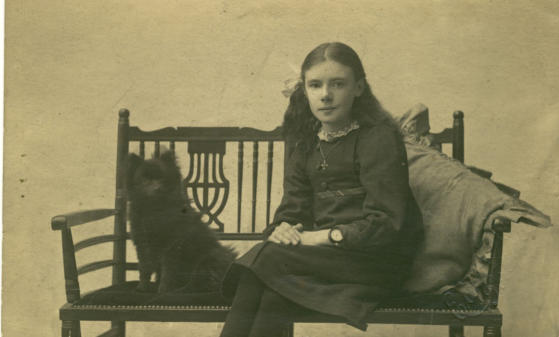
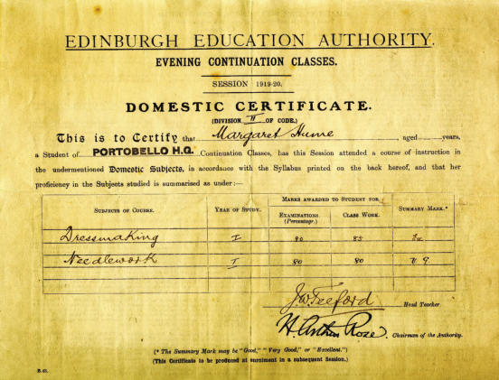
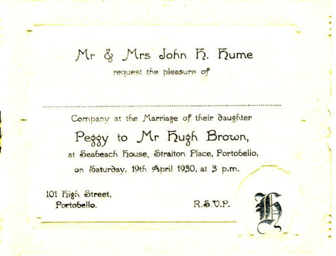
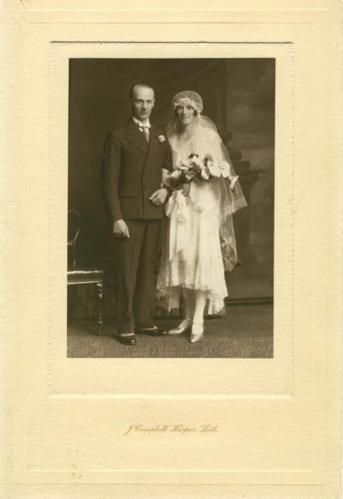
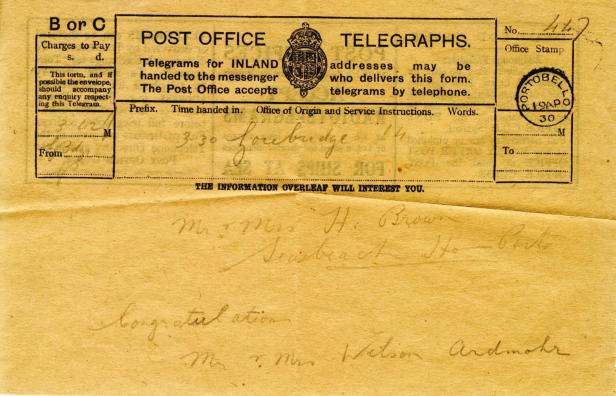
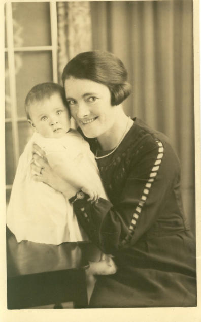
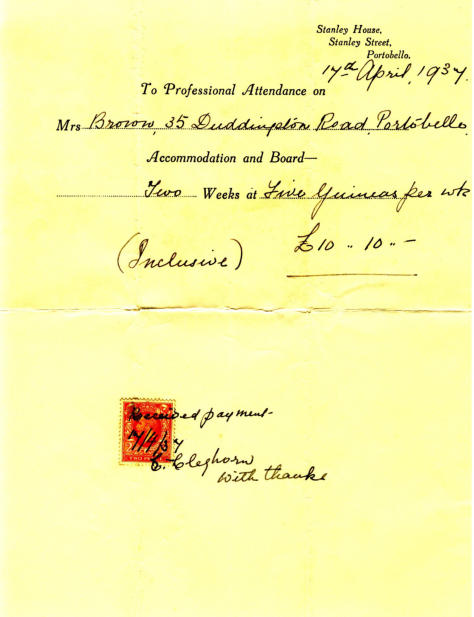

Peggy Brown (neé Hume)
It isn’t often we can follow someone’s life story, but Portobello Heritage Trust are fortunate to have photographs and documents relating to Peggy (Margaret) Hume, later Brown, which allow us to follow her life from her early years until she becomes a mother herself.
Peggy was born in 1904 and lived at 101 Portobello High Street. The photograph below was taken later that year in the studio of the Vienna Photo Coy, which could be found on the Esplanade in Portobello. It’s a formal photograph with Peggy propped up in an elegant chair, representative of the style of photographs taken at that time.

Some years later, she had her photograph taken in Elsemere Studio, Portobello, with her Pomeranian dog Sid, who appears to be very well-behaved and is posing nicely.

We have a jotter from Peggy’s Domestic Science classes at Portobello Higher Grade School. It covers lessons from 4th October 1916 to 18th April 1917, and gives instructions on how to carry out the cookery and domestic chores of the time. Here are a few examples from the jotter:
Nov 16th 1916
Fig Pudding
1oz flour 1oz bread crumbs 1oz suet Pinch of sugar, cinamon, [sic] and spice Pinch of baking powder 1 teaspoon brown sugar Milk 1oz figs
Method 1 Chop suet finely 2 Cut figs into small pieces 3 Mix all dry ingredients together 4 Add enough milk to make the mixture drop from the spoon 5 Turn into greased bowl and cover with greased paper 6 Steam steadily for 1 to 1½ hours
Jan 25th 1917
Beef Tea
¼ lb lean beef Pinch salt 1 teacup or 1 gill water
Method Wipe, scrape finely and put into cold water and salt; cover with greased paper and stand for 15 minutes; place jar in pan of cold water and simmer gently for 2 to 2½ hours strain when ready remove fat and serve hot.
Quickly Made Beef Tea
Turn meat and water into a clean pan beat with fork over a slow fire till meat changes colour; strain; remove fat and serve.
Feb 15th 1917
Preparation for Washing Day
1 Tuesday is the best day for washing as all the preparation can be made on Monday 2 Collect all clothes and sort into heaps a) All coloured and woolen [sic] articles b) Body linen c) Bed linen d) Table linen e) Fine articles such as lace, muslin, etc. f) Handkerchiefs g) Coarse articles such as kitchen towels, etc 3 Steep articles which require steeping 4 Make soap-jelly 5 Get in all stores necessary such as soap, blue 6 Set boiler and boiler fire
Feb 19th 1917
Washing and Dressing of Handkerchiefs
1 Soak handkerchiefs from 12 to 24 hours in cold water and salt 2 Wash by rubbing in two hot waters with soap till clean 3 Boil for 15 to 20 minutes to whiten and purify 4 Rinse (1) in lukewarm water to remove soap (2) in cold water to freshen (3) in blue water to whiten 5 Wring and hang up till half dry 6 Iron and fold 7 Air well
Wash day seems to have been a real chore then. Life is so much easier nowadays with automatic washing machines offering delicate washes, energy-saving washes, fast spin speeds and tumble-drying at the touch of a button. These lessons all took place during World War One and show that her education continued unbroken by the trials of war.
In 1919-20, Peggy attended what were then called ‘Evening Continuation Classes’ for Domestic Subjects, as we can see from the certificate below.
She appears to have been a very good seamstress and gained good grades.

Peggy married Hugh Brown on 19th April, 1930, at Seabeach House, Straiton Place, Portobello, as can be seen on the invitation below.

The happy couple can be seen in this photograph taken by J Campbell Harper, Leith.

Peggy and Hugh received this telegram of congratulations. Telegrams were often sent to congratulate newly-weds.

Here we see Peggy, in 1937, with her beautiful baby daughter Marjorie. It is a much less formal pose than that taken of Peggy when she was a baby. Both look happy and well.

In 1937 pregnancy and childbirth were not always guaranteed to result in such a happy ending. Many women had home births, aided by female family members and experienced neighbours, with the midwife only called in cases of emergency. One of those present would meet the demand for “hot water and towels”. No pain relief was available. Men were not allowed into the room while the birth was taking place, although they were expected to help look after the other children in the family while the new Mum rested. Mums were advised to lie-in for two weeks, but for many this was impossible due to the demands of family life.
There was a Maternity Hospital at the Royal Infirmary of Edinburgh, which was used to train midwives, but the maternal death rate in Scotland was high, with a peak of 651 in 1931. The Simpson Memorial Maternity Pavilion was not opened until 1st March 1939. Improved facilities at Simpson’s meant better antenatal and postnatal care for mothers, with more women giving birth in hospital, where infections were contained, which led to a decline in mortality rates. The establishment of the National Health Service in 1948 provided free medical care for all. Nonetheless, the BBC series Call the Midwife, originally set in the 1950s, illustrated the many problems that still beset pregnancy and childbirth. New housing improved living conditions for families which, combined with better health care, allowed them to flourish. Women are once again requesting home births and, with these improvements, their requests can be met, ensuring the safety of mother and baby.
Peggy was fortunate enough to give birth to Marjorie in a private nursing home. The invoice below shows that Marjorie was born in Stanley House, Stanley Street, Portobello. Nurse Cleghorn ran this local nursing home and her signature can be seen on the invoice. Although the invoice is dated 17th April 1937, it appears to have been paid on 7th April. Perhaps payment in advance was required. Peggy at least got her two weeks to lie-in.

Stanley House had formerly been a private school and an early home for Portobello Baptist Church. It is now a private home.